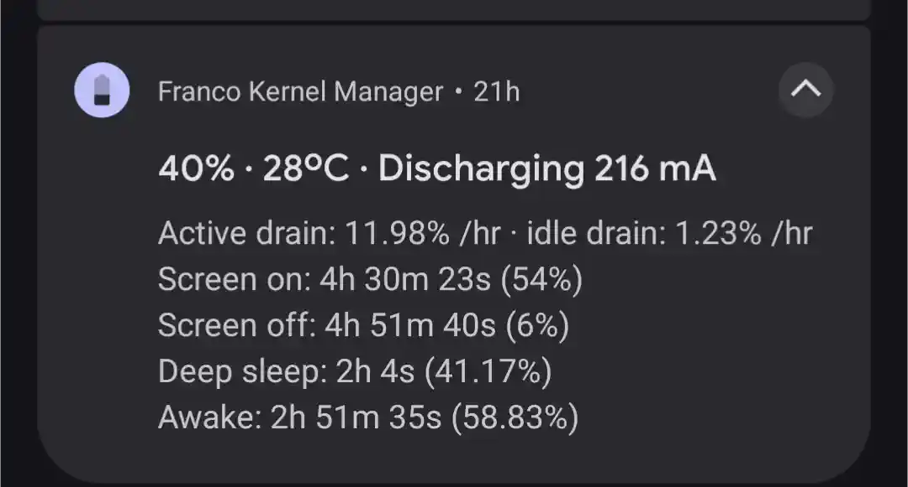

Micro Feed
Lesson learned, do not always trust chatbots with your Linux troubleshoot.
I had a glimpse of my clg life🙂. Back to monotonus life again
In order for me to write poetry that isn’t political I must listen to the birds and in order to hear the birds the warplanes must be silent.
Marwan Makhoul
Dead cells is so addictive. One of the games I always come back to;)
One of the person who has introduced me to east Asian cinema has his list of movies. Saving here for future. https://bugswriter.com/movies/
I want to make a few things:) A discover feed like Bearblog (my own indieweb hand curated search engine/browse) and also a small web browse like Kagi search. I have so many links that I have collected.
Fixed a lot of things including guestbook, book notes, and rss feeds of my website. ;)
Fish is cheaper and better source of protein imo. The Bengali in me is speaking😭😭
If you look at Epstein files Mark Zuckerberg suddenly looks like a good guy
Perfect is the enemy of good
The dreams are back again. Meditating 🧘♂️
It works

This is a test for the sticker support of my thoughts section.
I should make a page to showcase my favourite stickers
Be more generous than necessary. No one on their deathbed has ever regretted giving too much away. There is no point to being the richest person in the cemetery. Kevin Kelly
A lot of things I have learnt from Piu Di’s wedding. Lots of things I was wrong about.
Hank Green 9 hours ago There’s a tapeworm that lives inside ocean sunfish but it can’t grow or reproduce there. Its actual destination is the gut of a shark and it only gets there if the sunfish gets eaten. This is where it wants to be but there’s a million ways to get there.
It infects little crustaceans first, then whatever eats the crustacean then whatever eats that. Sometimes it ends up in Mola, sometimes in other fish. But all of that is just a winding path toward its goal.
While it’s drifting through this series of random hosts, it’s already built the hardware for its final destination. Its head has retractable tentacles covered in hooks precisely shaped for a shark’s intestinal lining. Thats where it’s headed and sometimes it gets there when a Mola is eaten by a shark, but that certainly isn’t the only path.
Remember Nybelinia surmenicola…
Be picky about your destination, but flexible about the ride.
I need to meditate more and more. I got a dream today. My head hurts bad.
Would there be a regime change in Iran?
Its sad what’s happening to Iran. One reason why india should be self sufficient in defense
Can anyone tell me why small web and indie web is dominated by techie? Did everyone else move on??
Making a Todolist app feels like it should be easy but it’s not
Apparently some americans think instant coffee is not really “coffee”.. Well fuck you
NTPC graduate level pre math is harder than CGL pre math, or maybe I’m just tuned for SSC?
I have so many maths to do :-;
Ios design is objectively better for mobile ui and app interactions
Flutter is better for building android apps, the animation is just chefs kiss.
I want to now transform my book tracker into an app.
I’m slowing starting to understand why people prefer zsh over fish.
I have so many ideas as to what apps I am going to make. Damn

How’s this app ui?
I have not found any app that I can use to post to my website and now I have built this. I’m so impressed. I have plans for other apps that I can make. Bye bye web ui.
Is this works?
What I made today
Image not found: img/3af17d3e-6f88-4fc1-9eda-0b9ca1b77129.jpg
A test note from my app.
Gaya was good. But made me so tired.
Mind maps are much better for last moment revision
I’ll be travelling tomorrow.
Note for the future: if you want to change blur level in a terminal emu, in hyprland, change it through hyprland and not the terminal.
Im so mad at myself. Sigh
Im going to be sick probably oh my god

This is why you should not mess with laptop more than it needs
oh my god im so annoyed how many servers do u need to check for mirrors?
when the speedtest for getting fastest mirrors take up so much time, sigh
Linux apps names are so bad in terms of discoverability lol
I try to compile android APK for the first time and it fails. I am so pissed rn I waited like 30 minutes for this.
Onno kono cm er theke wb er cm newspaper er headline e thakbeiii😂🤣
why am i so.sleepy always
One of the best video on this topic. Description has some good books. Why Indian MEN Like Leaked MMS? https://youtu.be/Bw5tKmZ1ztU
I feel like my brains will fall out when i try to study for 4 hours continuously.
why are CMs dying in plane crash? Conspiracy?

🤣🤣
The second hand market of laptops in the city i am currently living is very bad. Only 3 options.
today is more productive than other days.
I lost one big entry of my diary im so pissed.
gemini is just better at web design
3 days of not studying, it is so hard to get back on track.
i should write a post on how to use anki for ssc students.
Finally I am able to agree my family to buy me a laptop
i feel guilty, its two days and I still havent started my journey. Man!
Exam was good but I dont think Im going to clear it. I feel sad
Being a computer nerd has paid off 😭 even if I don’t get selected I’ll be happy
Exam tomorrow, I have another thing to do.
Good post, although it is not a technical one but sets the mood. https://lmnt.me/blog/how-to-make-a-damn-website.html
Huge update to my website, I am consolidating everything. No more multiple pages. One website for everything.
I thought all I needed was pomodoro technique to increase the hours I study, but apperantly not. Studying continuously for hours at end is much better solution. All I need to do is do this for twice a day.
I should not watch other people’s travel pics. The urge is real. The jealousy is real.
I studied continuously for 4hrs 40mins. I am proud of myself. I can do it.
probably the most useless court in the world is ICJ
Trying to make an app that would help me to push updates to this website. Hope it works.
New blog post, How I use AI in my studies. https://blog.blackpiratex.com/how-i-use-ai-in-studies/
I should write more. On my blog.
Happy belated new year. I am again one day late lol
Last day of the year😶
And the opposite of love is not hate after all, it is indifference. Source
New post: Year in Review - 2025 https://blog.blackpiratex.com/year-in-review-2025
if my mind is not relaxed I am better at guessing. But if im relaxed analytical thinking is more useful.
Exam soon, nervousness started, hello anxiety
Scientific scandals are going to be my favourite sub genre in True Crime ❤️😭soooo good

lmao
Who thought descriptive papers would be so tedious. I am writing but so many mistakes and so many to keep in mind.
I had a dream. A dream like any other. It was a happy dream.
after hours of talking with gemini and Claude in perplexity I finally have what I wanted. A fully working session recorder while writing on my diary app.
My phone is finally fixed. It’s display was broken. I have set it up now completely.
My diary app is becoming a fully featured. I need to do polishing. Maybe someday I’ll make a page that showcases its features. To the future me… Do I still use this web app? or have I quit using it.. or I don’t write diary now?
Govt wants to divert Ganga’s water to yamuna to dilute pollution. Are govt officials retarded or what
Rule 34 will have new meaning when AI becomes very good (soon)
Huge improvements to my Journal app.
- Graph page is much more prettier, new graph, word heatmap.
- New map page that shows entries by location.
- Backend changes, no more localstorage, it now stores in a local db. (No storage limits)
- images are no longer heavily compressed, just lossess compression.
- Export is now Zip, images are exported as binary
- New more page, with a sleep analysis page, fetches sleep data and displays on editor.
I hope the day goes good. Please. I am not a terrible person. I want it.
I feel melancholic now. It shouldnt happen. But here it goes.
I am so slow in maths. I have to do 50 questions in 30mins. But so far i can only do half. Sigh!
I gave a mock, its live ig? Idk when the results will come out. :-;

Almost 8 hours battery backup with 3 year old battery and 4000mah capacity. Using microg only no google play services
I couldn’t go to give the exam because it was in Birbhum like wtf bro its so farr
I got 73.9 and cut off is 74.9.. I didnt get for 1 marks. Wow. Wow
I made a Journal webapp for my personal use, it works offline, can be installed. You can use it: https://diary.sudipx.in
Generative ai (image) still sucks at human faces. 😭
Idc what others say but AI is goood
Why is the cold back again?